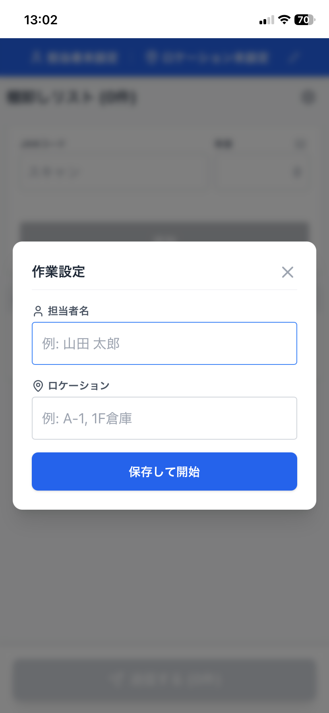
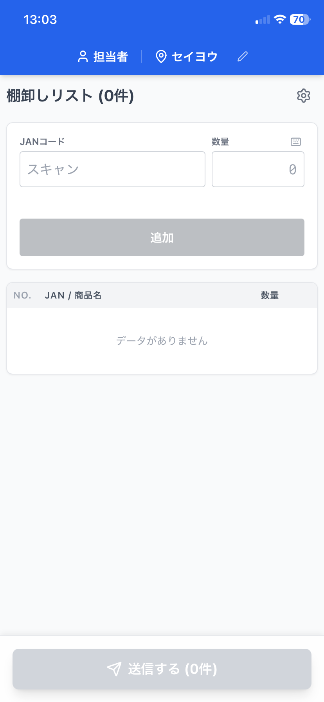
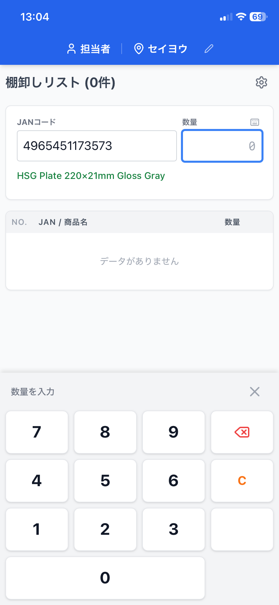
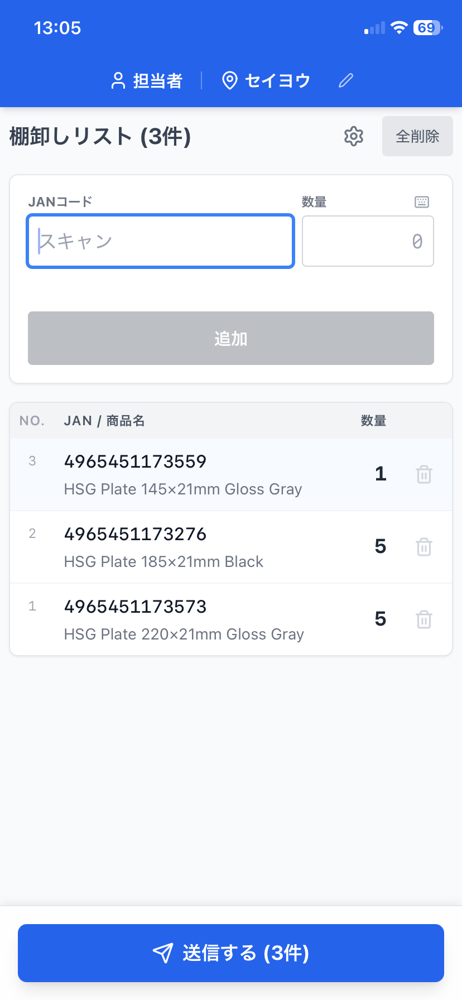

棚卸しアプリ 取扱説明書
このアプリは、スマートフォンとバーコードスキャナーを使用して、棚卸作業を行うためのツールです。
1. 準備：担当者と場所の設定
- アプリを起動したら、まずは担当者名とロケーションを入力してください。
- ロケーションの入力内容は、(セイヨウ、はなわくすい)など管理者が分かるようにしてください。

2. 動作モードの設定 (iOS / Android)
使用する端末に合わせて、アプリの動作モードを設定します。画面右上の歯車アイコン⚙️から設定してください。
- iOSモード: iPhone/iPad向け。
- 画面上に専用の大きなテンキーが表示されます。
- ソフトキーボードが自動で出ないように制御され、スムーズに作業できます。
- Androidモード: Android端末向け。
- 端末標準のキーボードを使用します（テンキーは表示されません）。
- 外部キーボードやスキャナーの仕様に合わせて使用してください。

3. 商品の登録手順
JANコードの入力
- スキャン: スマートフォンに接続したバーコードリーダーで商品をスキャンします。
- ポイント: 入力欄にカーソルがなくても、そのままスキャンすれば自動的に入力されます。

数量の入力
JANコードが入ると、自動的に「数量」欄に移動します。
- 初期値: 空欄（入力待ち）の状態です。
- 入力方法: 実際の数量を入力し、確定（Enter）ボタンを押してください。

登録完了: 数量を確定すると、下のリストに追加されます。
4. データの修正と削除
登録したデータはリスト（表）で確認できます。
- 数量の修正:
表の中の「数量」の数字をタップすると、その場で修正が可能です。
再度 確定 を押すと修正が反映されます。
- 商品名の修正:
商品名が表示されていない場合や修正したい場合は、名前欄をタップして手入力できます。
- 行の削除:
間違えて登録した場合は、右側のゴミ箱アイコン🗑️をタップして削除します。

5. データの送信（完了）
作業が一通り終わったら、画面最下部の「送信する」ボタンを押してください。
- 確認メッセージが表示され「OK」を押すと、データがクラウド（Kintone）へ送信されます。
- 送信成功後、アプリ上のリストはクリアされ、次の作業の準備が整います。
6. 便利な機能
元に戻す機能
間違えて「削除」や「送信」をしてしまった直後であれば、画面右上の「元に戻す」ボタンで1つ前の状態に戻せます。
ホーム画面への追加（インストール）
このアプリは「ホーム画面に追加」することで、普通のアプリのようにアイコンから起動できます。
アプリURL: https://tanaorosi.onrender.com
- ブラウザのメニューから「ホーム画面に追加」を選択してください。
- アイコンには「棚卸」の文字が表示されます。